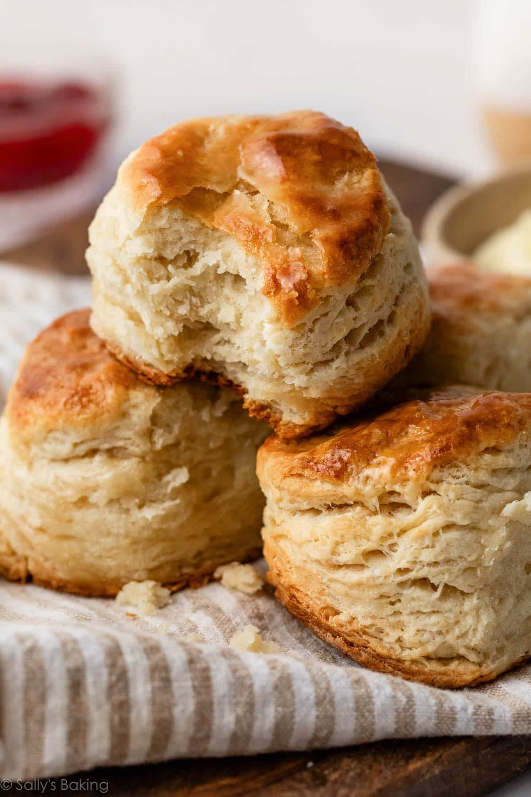

Buttermilk Biscuits

Ingredients
- 2 3/4 cups (413g) unbleached all-purpose flour
- 2 tbsp (26g) baking powder
- 1 tsp (6g) fine sea salt
- 1 tsp (4g) granulated sugar
- 2/3 cup (149g) unsalted butter (chilled)
- 1 cup (250ml) buttermilk (plus more for brushing)
Steps
- Preheat the oven to 425°F (220°C). Line a baking sheet with parchment paper. In a bowl of a food processor, addthe all-purpose flou, baking powder, salt, and sugar, and pulse a few times until thoroughly combined.
- Cut the butter into 1/2-inch (1.25cm) cubes. Makes sure the butter is extremely cold
- Add the butter to the food processor, and pulse 12 to 14 times,or until pea-sized crumbs are formed.
- Transfer to a medium bowl. While slowly streaming in the buttermilk, use a fork to mix until all of the buttermilk has been poured in and a solid mass has formed. If it's too dry, add 1 or 2 more tablespoons (15 or 30ml) buttermilk.
- Turn the dough onto an unfloured surface and gently knead until it comes together. Roll ut out into a rough rectangle. Fold it in thirds (like folding a letter) and then roll it out lengthwise. Fold it into thirds again, cover with plastic wrap, and regrigerate for 5 minutes.
- After resting, place on a lightly floured surface and roll it out into a rectangle about 3/4 inch (2cm) thick.
- Using a 3-4 inch (7.5-10cm) biscuit cutter, cut out as many pieces as possivle and place on the baking sheet. Continue to reroll and cut the dough to get as many biscuits as possible.
- Brush the tops very lightly with buttermilk. Bake for 15 to 17 mintues, or until the tops are goldeb brown. Split in half and enjoy!